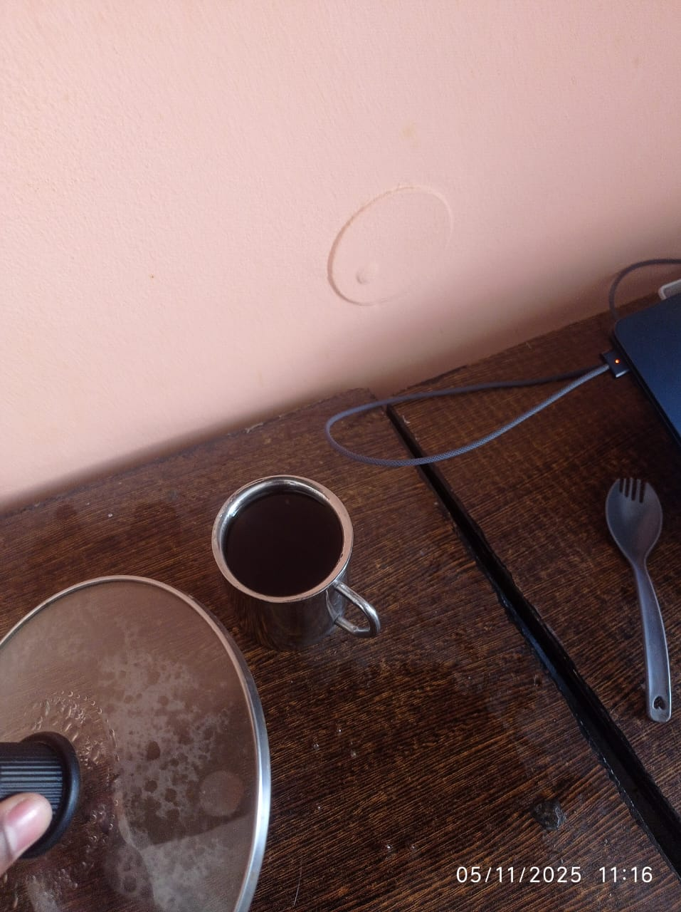
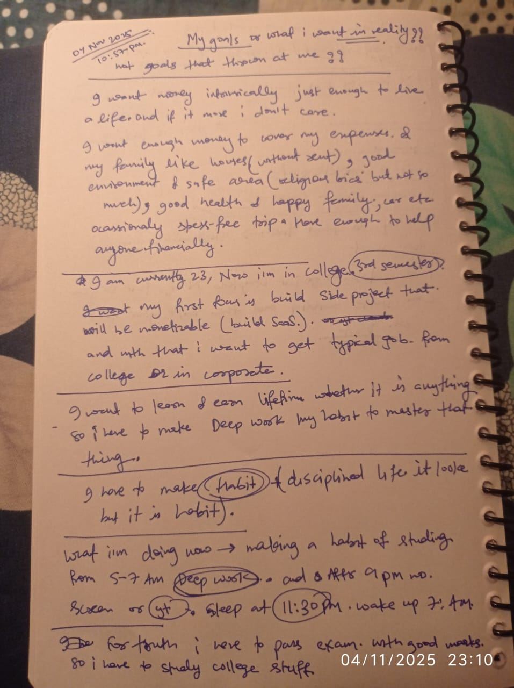
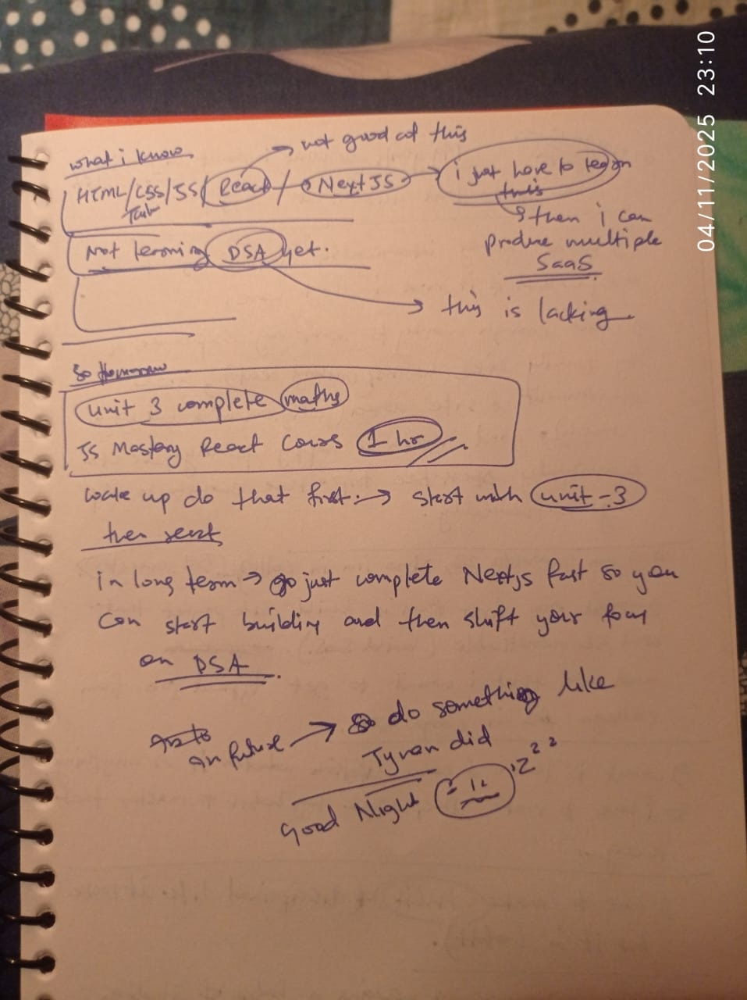

MicroBlog
Dec 30, 2025
books i have to read : - deep work by cal newport ultralearning by
scott young the freedom model efficiency superhuman by habit by
tynan superhuman skill by tynan life nomadic by tynan what i am
pursuing now is full stack dev, dsa, app dev, lightpacking for
future nomad, create minimal fashion and be authentic list of thing
i have : quechua mt100 -5 jacket quechua fleece wedge skiing
innewear top quechua warm trekking pant forclaz winter cap, gloves,
and neck gaitor what i have to take - a 50 litre bagpackprobably
simond , waterproof shoe for minimalsit fashion i want 4-5 solid
plain tshirt, 2 jeans black and blue, 1 adidas shoe , 4 socks , 5
underwear, crocs, one barefoot shoe, what habit to embrace ? deep
work twice then quit be clean solve 1 dsa everyday habit of seeing
only positive assuming every one is good creates no jealousy improve
clear speaking buy cold turkey and writer it is also great
Dec 15, 2025
I am just assessing how my life in last 2-3 days feels aimless,
goals doesn't have some motivation for work. Only sleep coming, not
have enough will for work. I can easily say that why it is
happening, that any girl came to my life. It is for the first time
so it totally feel weird. Look what i have done,i changed by
profile picture on instagram, posting stories i think she like me
like wars, mountain, travel, philosophy etc. , i generally don't use
instagram, but for the sake of attention i use instagram & waste my
time. Doom scrolling , stress and that cycle loop. Now i check
whatsapp to see that she sent me something or replied or not.
Feeling FOMO every time. Now, I think of just leave that girl for
in my mind like detachmnet. what she think i don't care...
Nov 24, 2025
i am sort of money to buy books in paperback form , so i write a
program to just upload pdf, it will output all pdf page n_up form
but 2 , if you print 300page pdf double side you have paid only
75inr instead of 300, it requires manual work for cutting and
binding etc..
Nov 21, 2025
hey sameer, i have been tired of being in this crowd and empty noise
of people, now i want to go to live in mountain all by books and
notebook solving algorithm and maths etc.like really deep session
without devices that will enhances by problem solving. got into
really problem solving really feel the struggle and embrace raw
life. cutting wood, future planning, and i don't know what i will
get,making and cooking my own food just like Carl Jung did.really
owning my own and becoming real self, throwing mask being who i am.
think of like sabbatical for 1 year. although i keep my devices to
go downhill in city between 10- 15 days to just push my code all and
run my program, but mostly analog thing i will be using.

this is the place called jobra in manali where me, vishu and yash
camped and in morning two other joined vivek and suraj, that's a
great time , totally worth it , thanks for all that all of you. i
like the places where i don't perform just to seek attention,
seeking attention is like losing piece of oneself, becoming crowd,
if you are seeking attention to just prove then obviously i am
playing the wrong game. this is i am thinking of after 4th year. but
i know my parents will revolt in regarding jobs or money etc or
safety why this wierd shit, what i can do this is my inner sense.
and inner sense is my compass etc.... thanks sameer to live this
much life on earth greatly but you have lot to improve.. thanks my
parents who gave all the resources to study and living, food
literally all the thing in luxury way, thanks again.. let me forgive
all who have hurt me and forgive me too if i hurt them now there is
no weight on my shoulder etc...
Nov 05, 2025
good day and productive , grateful for this life and not fighting
for attention of anyone. thank you Allah for this life and for
giving me this chance to live and learn and grow and improve and
help others and make a difference in this world.



Nov 3, 2025
Current goal : Build the habit of deep work — consistent,
distraction-free focus to master coding/DSA long-term. Eventually
reach 4 hours/day of deep work through gradual compounding. Nov 3,
2025 — Woke 7:00 a.m. Started deep work at 7:10 a.m. for 30 mins.
Studied Inheritance and Polymorphism in Java. Focus: 8/10. Felt
solid, no distractions.
Oct 19, 2025
self-improvement is good
Oct 17, 2025
my biggest weakness in my life is not porn addiction, not
communicating well, not physique, not insecurity, but: "Starting
thing that I don't able to finish". any course, books, etc. Jumping
from one course to another, this playlist to others, this book to
that book, fr. ex: starting javascript by super side but not
finishing etc. You are like catching rabbit many at once so you
don't able to catch one. Reading books that I don't finish. So now I
have started the react course, if I switch to other course. That
means again I'm repeating the same mistake. So my biggest commitment
is to learn small but learn daily, if you can not understand, it's
mean you are just avoiding or running away from fear. and one more
thing you can't improve all at once, you just have to pick one.
improve all at once. Impossible. Become performer not strategist/
don't go into intellectual mental masturbation by acquiring
knowledge. Just have goal what to build startup working on it. you
have to learn by practice -> the only way you can learn. Take
Action! Take Action! Take Action! Take Action! Only way to improve,
not be whose who philosophy only acquire knowledge, never use it...
Oct 19, 2025
i have realised that i am judging other more than normal i think i
should shift focus from people to me to just improve see my
fallacies what i am incapable of, what i am about insecure of, my
communication skill is not too good, why i am fear speaking on
stage, why i am inconsistent to gym, why i am skinny after 1 year of
inconsistent gym, when i have problem and need to improve why i am
laughing on other problem if you able to tackle your own problem.
hope next will doing what he is capable but result not came yet.
it's stupid to laugh on other person stuff when you are in gutter.
aware about this stuff.. thanks life.
Oct 11, 2025
i have made a rule for myself for my whole life for weekend.
currently i have college so other day i don't have in daytime
focused session but weekend is all in my hand in my control how i
want to spend. so the rule goes like this - desktop bcz i use this
most : no youtube ( i have downloaded lecture offline using
yt-dlp , no reddit,
no any shopping site ( except if i have to track order or receive )
, no twitter, no instagram, no movie , no entertainment stuff
online... that's it... and on phone minimal launcher for 2 days.. my
main goal is to just get two days break from getting more
information. i say that information diet for 2 days. this is will
help me focus on meaningful work, and confront to myself
Oct 11, 2025
integrity : it's a choice between what convenient and whats right.
hard tk develop bcz it need courage radical honestly, but this is
the only way to truly live
Oct 07, 2025
today i have done - washes clothes, rotten egg to trash, eaten 12
eggs fear of rotting, black coffee, and further looking for
optimistic life. completed and study todays plan ( recursion )
focused work with little bit decison fatigue.. day was good bye...
Oct 07, 2025
i am getting the feeling of for my my blog reading section that i am
showing listing books for attention and potentially his cover. i was
thinking like i am becoming attention whores. so i removed all cover
and listed book that i really read no hurry.
Oct 04, 2025
winter arc goal : 4 hour deep work habit at end of arc & build gym
habit and gain 3 kg weight.
Oct 04, 2025
i will two books per month from now. that will keep control of
information masturbation and forces me take practically action and
improve your life if non fiction.. thats all
Oct 03, 2025
one funny childhood story i can remember of mine is - actually what
happen is when i am in hostel eye flu is spread in my hostel and the
student are going home due to this reason but that fucking disease
not reached to me and my bois , so what we did is we apply detergent
soap directly into our eyes and that get totally red more than eye
flu , then we got permission and i got to home... that's all hope
you liked it..
Oct 01, 2025
backbiting
today i have come across the very realization that i have been
backbiting people from very birth. till now i know the meaning of
backbiting is - telling secret of people to other and i was
satisfied that i am not backbiting other. but today i know the exact
definition of what actually backbiting is when i was talking with
one of my friend he explained me what actually backbiting is he says
anything that harm other person dignity is backbiting. then fuck i
am backbiting and lowering my standard in all my childhood, although
i don't typically backbite other like girls and never spread false
of anyone. i spread true ( but negative ) of others that attack
other person dignity and character. what actually backbiting is :
read this article
https://myislam.org/backbiting-in-islam/
what actually hit was this : In the hadith of Abu Dawud 4874,
Prophet Muhammad (ﷺ) was asked a question about Ghibah (backbiting).
Someone came to him and said what if what I say about my brother is
in fact truth? Prophet Muhammad (ﷺ) replied, if are right, you have
slandered him, and if what you say of him is not true, you have
reviled him. [1] my key takeaway is - وَيْلٌ لِكُلِّ هُمَزَةٍ
لُمَزَةٍ “Woe to every persistent slanderer, persistent defamer” “I
will speak ill of no man and speak all the good I know of
everybody.” ― Benjamin Franklin On the flip side… If you are a
victim of backbiting take comfort in knowing that they are only
helping you on the day of judgement. Of course protect your
character if you feel it is threatened but do so with integrity. Do
not fall victim by engaging in the same game. We must show
discipline and emotional fortitude and overcome such petty
altercations.
from now on i am not going to talk ill of anyone, never spread
negative information of other person even if it is true, not bcz
it is harm other dignity and respect but also it is lowering my
character as a man. controlling tongue is very important for the
exchange of temporary relief.
Sep 24, 2025
when we reach in our 20s we try to rationalize every decision for
example like i should not behave like this or that i am not that
type of person, not realizing that our thinking can be faulty and
cause life long drift in direction.don't attach with any identity if
it will not benefit you, like i am not the person who goes into
religious and political rant bcz these are just draining my energy
until i am not in that politics or religious field. but on the other
hand i make identity of me like i am the person who hardworking ,
work autonomously bcz i have good habit..
Sep 18, 2025
now i realised that after studying little i can get cgpa more than
my peers, till now i understand college studies like shit totally
not giving a damn fuck. now i realized even 5 hour focused study can
get me good cgpa for the entire sem. so i have to study discret
maths, operating system, java ( that i am doing more seroiusly bcz i
am stuing dsa), computer networks, computer organization and
architecture, and other assignment shit ehich i dont like... so
quickly i will complete this maths and operating system first then
go on next... coa then the whole dsa and java...
Sep 23, 2025
let's say you solve all your dating and women problem, like dating,
sex and anything related to women, this doesn't mean you solved all
you life problem no women can solve your working hard, lifting heavy
weight , facing fear on mountain, fear anything this is totally
different thing. so i give advice to me is jsut play this game and
quickly back to your life and making yourself better and winner.
Sep 22, 2025
Future Cool idea to build :-
The “Shredding Alarm Clock” is a quirky, motivational device
designed to punish snoozing. It functions like a normal alarm clock,
but with a twist: when the alarm goes off, you must turn it off
within a set time, or a small motorized shredder destroys whatever
is placed your real money . The device combines an alarm system, a
motorized shredder, and a microcontroller to enforce punctuality in
a fun and slightly mischievous way. It’s a playful reminder that
procrastination—or oversleeping—can come at a cost!
Sep 22, 2025
Tynan Notes on Friendship
How To Make Amazing Friends
-
Value friendships: They bring more joy than careers or
possessions.
-
Be excellent: Improve yourself, know your worth, be a friend
others feel lucky to have.
-
Be intentional: Identify traits you want in friends and choose
carefully.
-
Prioritize time: Spend it with people who help you grow; better
alone than with the wrong people.
-
Be patient: Building a strong friend group takes time and
gradual introductions.
-
Contribute positively: Actively improve your friends’ lives
whenever possible.
How To Make Lots of Great Friends
-
Value people: Friends and family are the most important source
of gratitude.
-
Don’t be annoying: Self-awareness is key; eliminate habits that
push people away.
-
Leverage introductions: Trust is involved when someone
introduces you—make them look good.
-
Bring value: Contribute positively to friends’ lives (humor,
listening, advice, organizing).
-
Be proactive: Friendship shouldn’t be left to chance; engage,
introspect, and actively improve your social life.
Making Friends with Awesome People
-
Friend circles matter: Being proactive about building a great
friend group is crucial.
-
Understand sought-after people: Popular or well-connected people
are cautious—time with them is limited and valuable.
-
Provide value & be unneedy: Ensure they enjoy your company,
don’t impose, and avoid asking for favors.
-
Be a connector: Introduce new people to your existing friends;
it multiplies social opportunities.
-
Meet people in person: Hanging out where your desired friends
already are is more effective than cold emailing.
-
Focus on quality, not fame: Build friendships for shared values
and connection, not prestige or personal gain
Treating Strangers Like Friends
-
Treat everyone like a friend: Engage strangers genuinely,
listen, and respond as if they’re real people.
-
Simple habits matter: Small gestures (like asking questions,
sharing a bit of yourself) create meaningful connections.
-
Technology can reduce substance: Personal, thoughtful
interactions matter more than scripted or surface-level
communication.
-
Mutual benefit: Treating others well feels good and often
encourages reciprocal kindness
-
Friends vs strangers: People are willing to go further for
friends; treating strangers warmly can sometimes elevate them to
friend-like status.
-
Real-world examples: Genuine friendliness leads to unexpected
favors, opportunities, and deeper connections.
-
Real-world examples: Genuine friendliness leads to unexpected
favors, opportunities, and deeper connections.
-
Happiness formula: Being human and kind fosters connection and
increases personal joy.
Have Less Acquaintances, More Friends
-
Prioritize quality over quantity: Cutting back on socializing
and acquaintances allows more focus on truly meaningful
friendships.
-
Acquaintances aren’t free: Time spent with shallow connections
reduces energy and time for potential or existing deep
friendships.
-
Prune the noise: Reducing superficial interactions clarifies
patterns in the friends you truly value.
-
Patterns in great friends: Good people: Positive, noble,
inspiring actions; Optimistic mindset: Resilient and
forward-looking even in adversity; Ambitious/entrepreneurial:
Many have intentionally chosen impactful careers or ventures.
-
Use patterns for screening: Focus energy on people who fit these
traits, and limit time with those who don’t.
-
Outcome: Fewer acquaintances, stronger connections, and
friendships that inspire growth.
Sep 20, 2025
lesson from Islam Makhachev -
-
If you want other to respect you, you have to respect others
first.
- Never lie to yourself about your current skill level.
- Have strong values and stand up for your values.
- It’s always best to let the result do the talking.
Sep 16, 2025
i was on some women forum on reddit and i also generally observed
women saying like “ i want a guy, here is my list - i think that guy
that checks all ticks in my list ( for e.g. 6 ft tall, muscular ,
rich, jawline , fairness, etc all the bullshit you heard of commonly
” but on the contrary i think it is exactly same you go to buying
stuff like suppose i want to buy powerful pc and in my list i want
feature like ryzen 5, 16gb ram, 4k monitor , vertical and
horizontal, logitech mouse, keychron Q1 max mechanical keyboard - if
all the stuff matches my list i will buy same like women selects
men.
so a what man can do is just live- invert the game , not get
played by women, what i do is whenever i think that she is finding
guy who is on her to-do list i just calmly remove from my mind
entirely, no hate. be aware even if you checks all of her list
don't go for her, it's not worth your time and happiness and
peace. it's a list for using stuff like you will use pc exactly
same as women use men. don't get confused with love. True love
needs no editing — it embraces the soul exactly as it is. -
Bhagvat Gita. always think of in abundance if that is not then
move there are many women.. peace off..if you’re reading this
don’t make mistake of that i don’t able to get girls/women that’s
why i am writing bitterly against women, i have/had many
experiences than you…
Sep 10, 2025
no amount of money, fame, product can bring you peace if you don't
able to beat resistance that limiting your potential. no matter
there is about porn addiction or study 4 hour per day for 5 years.
until resistance beat you, you're just living external thing losing
yourself just for attention and praise.keep youself alive by chasing
best of you from yesterday you was. best analogy is "man is rock and
sculptor of himself". by the way others around you are all still
just silly child, just avoid them...
i love how people simply play games without knowing, trying to
dominate and manipulate - don't give fuck just move on or play
better games or better manipulative tactics and be dominant. that's
why like machiavelli..
Sep 5, 2025
Until you go till the extreme, you can’t find balance. before is the
path of moderation and mediocrity. like buddha find middle path when
he goes to the extreme like after living luxury to till death
asceticism and hence concluded with "the middle path"
Sep 3, 2025
situation i laugh on - today i not go to college just because i do
not have pants for outing/college - i have 2 pants only and both in
laundary. i have one extra pant but it is skinny as fuck that looks
cringy on peak.